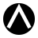

H5.2-A · Contraforma Aberta e Geométrica · acabamento técnico
Solução final para aprovação
A única base desta etapa é H5.2-A. O acabamento ajusta posição óptica, abertura, terminações, peso e centro dentro do disco; não introduz hipótese nova, módulo externo, badge, anel segmentado ou gradiente.
Estado · aprovado e integradoH5.2-A é o símbolo oficial do Design System v0.2.0. Esta ficha técnica registra as regras de uso; a publicação do Design System depende da revisão do repositório.
01 · construção geométrica final
Disco sólido, vazio aberto, eixo estrutural simétrico
A forma principal permanece centrada no viewBox 48 × 48. A contraforma não possui barra transversal, módulo externo ou elemento separado.
Disco
r = 20uMassa sólida contínua, sem anel, corte ou módulo fora do disco.
Ápice
x = 24u · y = 9,5uAlinhado ao eixo vertical para manter simetria estrutural; a posição óptica permanece levemente alta.
Abertura
27u entre terminaçõesBase aberta o bastante para preservar o vazio sem transformar a forma em seta ou telhado.
Peso
4,6u · terminações buttHastes firmes, sem arredondamento que suavize a geometria ou crie aparência de ícone genérico.
Centro óptico
massa e vazio equilibradosO vazio é amplo e legível, mas não atravessa o disco nem se torna um A convencional.
Distinção
sem barra transversalNão é seta, montanha, telhado ou letra: é uma contraforma aberta contida em uma massa circular.
02–10 · versões e aplicações
Correspondência técnica entre principal, óptica e usos
A versão óptica altera apenas peso, raio e clearance para sobreviver em 16 px e 24 px. A lógica da contraforma permanece a mesma.
2 · Versão principal
Construção-base para 48 px e aplicações ampliadas.
48u · r20 · stroke4,6
3 · Variante óptica de 16 px
Favicon e microescala. O peso sobe; o conceito não muda.
16px real
inspeção 8×
4 · Variante óptica de 24 px
Necessária para manter o mesmo equilíbrio entre 16 e 32 px.
24px real
inspeção 5×
5 · Positivo e negativo
O disco sólido permanece presente nos dois campos.
6 · Monocromático
Sem Signal, Blueprint ou qualquer dependência cromática.

7 · Favicon
A leitura começa no tamanho real, não na ampliação.
Arquiteto de Operações
inspeção
8 · Assinatura horizontal
Categoria profissional primeiro; símbolo como assinatura.
Arquiteto de OperaçõesNOVA CATEGORIA PROFISSIONAL · POR LEONARDO BRASIL
9 · Avatar de perfil
O círculo de perfil é contexto de uso, não parte do símbolo.
10 · Selo profissional
Uma moldura simples pode existir na aplicação; não integra a marca.
NÍVEL 03
CERTIFICADO
11–13 · regras técnicas
Área de proteção, tamanho mínimo e usos incorretos
11 · Área de proteção
Usar X = 4u como campo mínimo ao redor do disco. Nenhum texto, borda ou ícone entra nesse campo.
Campo livre mínimo: quatro unidades do viewBox 48. A proteção é espaço de respiro, não um anel visível do símbolo.
12 · Tamanho mínimo
Regra validada nesta etapa: 16 px apenas com a variante óptica; 24 px ou mais para aplicações com nome.
16px · favicon
24px · aplicação
Abaixo de 16 px: não utilizar. A versão principal não deve ser reduzida para substituir a versão óptica.
13 · Usos incorretos
As proibições preservam a distinção da contraforma aberta e evitam leituras de seta, montanha, telhado ou A convencional.
Adicionar barra transversalTransforma a contraforma em leitura de A.
Fechar a contraformaElimina o vazio que distingue H5.2-A.
Adicionar módulo externoCria uma segunda marca fora do disco.
Rotacionar ou distorcerQuebra o eixo estrutural e o centro óptico.
14 · arquivos SVG finais
Pacote canônico integrado
Estes são os arquivos canônicos do símbolo H5.2-A, integrados ao diretório oficial de assets do repositório.
Recomendação objetivaManter este pacote como fonte canônica. Os assets públicos já apontam para H5.2-A. Não alterar geometria, proporções ou variantes sem nova decisão documentada.
{kind=link}
{kind=link}
{kind=link}
{kind=link}
{kind=link}
{kind=link}
{kind=link}
{kind=link}